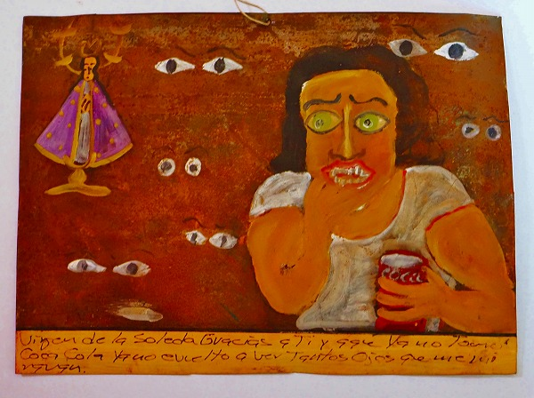
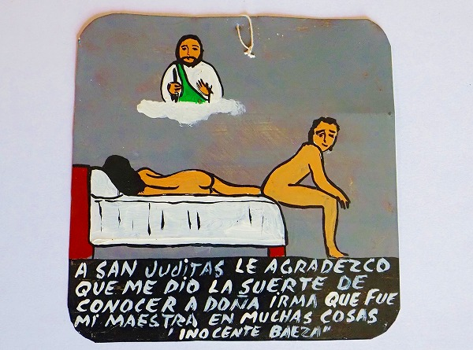
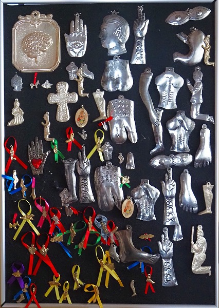

旅の土産話
てなわけで旅から帰ってきたよ。
やはり今回一番印象的だったのは庶民の絵馬である
エクスヴォトだった。
この
人と神がアクセスするための信仰装置を見ていると、メキシコの人々が神をどう捉えているのかが端的に判る。
メキシコのエクスヴォトの最大の特徴は内容がユルい事。
これはヨーロッパに比べて比較的歴史が浅いのと奉納習俗が今でも続いていることが重要なファクターとなっている。
そのため病気などの古典的な願いだけでなく、現代的なテーマが多く取り扱われているのだ。
エクスヴォトは基本的に金属の板に絵具で描かれている。
そのほとんどが願い事が叶ったので神に感謝します、という呈で描かれている。
このような教会に奉納されていたはずのエクスヴォトが何故か教会近くのアンティークショップや民芸品店などに置かれているのだ。
先にも述べたがこのエクスヴォトの奉納習俗は
庶民が自発的に行っている民間信仰の一種であり、基本的に教会サイドは奉納の場を提供するだけで、積極的に関与することはない。
それが証拠にエクスヴォトが飾られている場所は教会の片隅の小部屋であることが多く、中には教会の聖堂とは全く別の建物だったりすることもある。
どちらかというと教会的にはあまり触れて欲しくない、というニュアンスを感じたのだが、気のせいだろうか。
ともかくエクスヴォトは日々増え続ける。
スペースに限りがある場合、当然古いものから外されることになる。
日本の絵馬だったら、そこでお焚きあげ、という事にもなろうが、そこはホラ金属の板ですから。
仕方なく、古道具屋に持っていてもらう、といった感じなのではなかろうか（独断と想像）。
そんなメキシコ各地で買ってきたエクスヴォトの中から印象的だったモノをお披露目いたします。
まずは同じ作者による3枚のエクスヴォト。
これは病気に次ぐオーソドックスな事故からの生還シーン。
自動車と汽車が衝突したけど何とか助かりました、的な描写。
画面左上にはマントを着た聖母の絵が。
オアハカのラソレーダ教会の聖母だろうか。
不気味なお墓を通って怖かったけど無事でした、的なエクスヴォトなのか？
感謝し過ぎだと思うが、余程怖かったんでしょう。
こちらは怪我をしたプロレスラーが生死の間を彷徨い、生き返った様子を表したエクスヴォト。
…正直言って、絵がヘタなんで表情とか読み取れないけど状況は何となく判る。
そして走り書きのような文字が焦燥感を煽っているような気がする。1960～1970年の作。
お次は木の十字架にハート形のエクスヴォトが掲げられたもの。
ハリケーンから助けてくれたグアダルーペの女神への感謝。
サメから救ってくれたマリアへの感謝。
この
ハート型のミラグロは比較的ポピュラーで、教会に奉納するだけでなく装飾品としても家や店に飾られる。
民芸品店などでもよく見かける。
文字通り心臓を捧げて来た人々の象徴なのかもしれない。
メキシコと言えばルチャリブレ（プロレス）。
私も観に行ったがきらびやかな選手入場とド派手な空中殺法の数々にかつてミルマスカラス、ドスカラスの薫陶を受けた
昭和プロレスっ子としては感無量であった。
もちろんマスクやTシャツもたくさん買ったけど、エクスヴォトも忘れてません。
こちらは女子プロのエクスヴォト。
闘う力を与えてくれるグアダルーペ様に感謝します。
子供の手を引いているところが泣ける。
このキックでチャンピオンになりました。ありがとう。
他にもメキシコで盛んなサッカーや野球のエクスヴォトもあった。
一見ギョッとするエクスヴォトだが、どうやら行方不明の子供を探しているようだ。
民間呪術が上手くいかなかったようだ。

コレ、チョット文章が判り難いのだが、どうもコーラを飲んでいるとき周りの目が気になっていた事に悩んでいた人のエクスヴォトらしい。
ある意味、凄く現代っぽい案件ですね。
帰国後、数人の中南米の人に聞いたのだが、とにかく
エクスヴォトはスペルミスが多い、との事。
これは識字率が低い人達が奉納するからなのか。
、あるいはスペイン語以外を使っている人達（メキシコには様々なローカル言語がある）が奉納しているからなのか。
セクシャルなエクスヴォトも多い。
これらはヨーロッパではまず見られない珍しい内容で、ある意味
愛の国、メキシコらしい題材だ。
私の下着があなたに何をした！
ダッサイ下着を揶揄された怒りのエクスヴォト。
素晴らしい恋人を見つけました、的な内容。よかったですね。
貧相な男だが、彼の心（男根のことかも？）はステキ。ハイハイごちそうさまです。

こちらもええ男と知り合った感謝。
コンピューターがなくても優秀な秘書がいるから大丈夫！的な感じでしょうか。
ベタな秘書ですねえ。今どきいるんでしょうか。
懺悔を聞く聖職者がこんな事を！
妻との離婚を告白している夫。
、その妻が新婦の膝の上に…的な内容みたい。
こんなエクスヴォト、教会に奉納して良いのか？
教会にブチ壊されたりしないのか？
浮気現場のシーン。
コレ、誰が何に感謝してるんだかチョット判らないのだが（判る人教えてください）、こんなエクスヴォトも教会に納めていたのだろうか？
このエクスヴォトをモチーフにしたピアスまで売られていた。
余程人気の絵柄なのだろうか。
そしてこんなピアス誰が買うんだろうか？俺は買ったけど。
こちらはハート型のエクスヴォト。
これまた浮気のシーン。
浮気の現場にカチ込まれましたが、意外と大ごとにならずに済みました、神様ありがとう…
って、オイ！刃傷沙汰じゃないか！
ストリートガールの殺し文句なのだろうか。最後にペソ、と付け加えるのを忘れない。
こちらもストリートガールのエクスヴォト。
今週の稼ぎを感謝、的な内容。
このように
浮気や売春といったカトリックでは取り扱いにくい題材がバンバン出てくるのが面白い。
中には新しそうなエクスヴォトもあるので、パロディで作られたものも混ざっているかもしれないが、それにしても俗っぽい題材が多い。
中には同性愛に関するエクスヴォトも。
メキシコのカトリック教会も相当度量が深いなあ。
男性同士の結婚報告。
同性愛を批判する人々に意識を目覚めさせるよう、聖セバスチャンに願っている。
真の愛を見つけました、的な内容。
どっかで見たことがあると思ったら缶詰の蓋だった。
このように様々な願いや感謝を絵にしたためてメキシコの人々はエクスヴォトを奉納する。
その題材は生々しく、え、そんなのもイイの？と思えるほどの絵もあるが、そこがメキシコらしいような気がする。
ヨーロッパの深刻な題材とは違って、真剣なんだかふざけているのかわからない題材のものが多く、それは裏返すと
メキシコの人々のおおらかさ、愛の深さを示しているように思える。
帰国してからメキシコ各地で買ったミラグロを飾ってみた。
身体の具合の悪いパーツを教会に奉納するのだ。

心臓と手、足が圧倒的に多かったが、もう少し具体的な胃、お腹、目、お尻などもあった。中にはチンチンも。
この辺も日本の病気平癒の奉納習俗に驚くほど似ていた。
次回、メキシコに行く際はもっと多くの奉納習俗を見てみたいものだ。
とりあえずこの辺で、お開き、という事で。
お終い